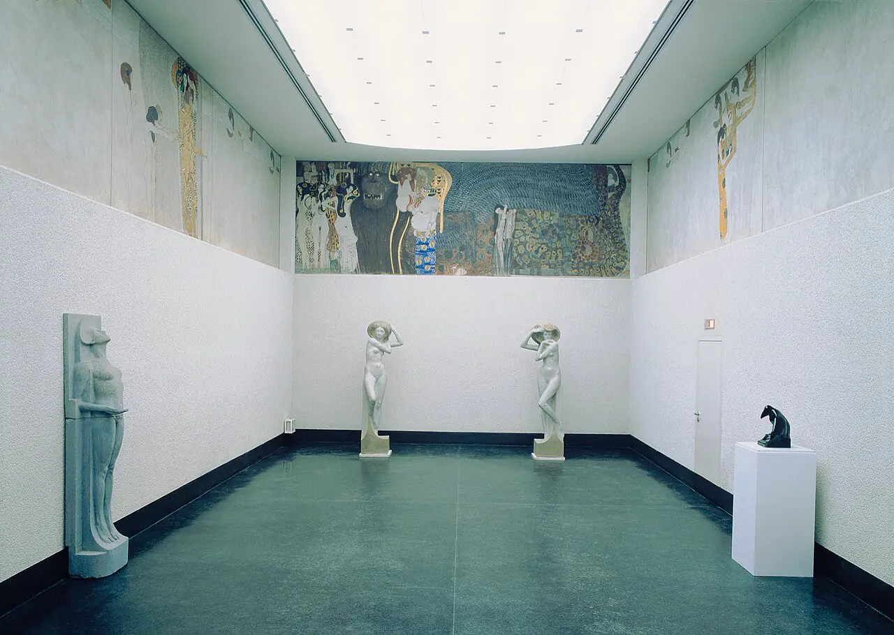

The salon
Sister Arts
Every painting, drawing and print in the atlas hung together on one wall, salon style, each with a note on the music it sits beside.





Every painting, drawing and print in the atlas hung together on one wall, salon style, each with a note on the music it sits beside.
